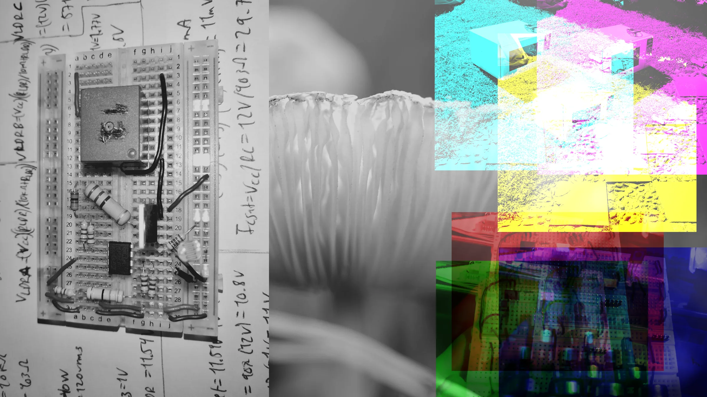

Tokens disponibles como variables CSS. Cambian automáticamente con el tema.
Notas generales, referencias y documentación del artefacto.
Compilación exitosa. El artefacto está operativo.
Componente inestable. Revisar antes de continuar.
Fallo crítico en el núcleo. No encender sin reparar.
Protocolo de red activo. Escuchando en el puerto 8080.
Experimental. Comportamiento no documentado. Resultados consistentes.
Interfaz de usuario. Pastel suave.
Módulo de aprendizaje autónomo. Clasificación en progreso.
Stream de datos entrante. Buffer al 74%.
Contenido de salida. Legible por humanos.
Log de éxito. Sin errores en los últimos 48h.
Output verificado. Todos los assertions en verde.
Inline: toggleCRT() activa el efecto de scanlines.
# sherry construye desde basura class Artefacto: def __init__(self, materiales): self.core = materiales[0] self.shield = "basura reutilizada" self.online = True def activar(self): return f"[SYS] {self.core} online · shield: {self.shield}"
| Token | Oscuro | Claro | Semántica |
|---|---|---|---|
--accent | #FF1466 | #B2003F | Acento principal · peligro · UI activa |
--magenta | #FF1466 | #B2003F | Neon caliente · keywords · error |
--cyan | #00F5FF | #006A6F | Red · sockets · info técnica |
--electric | #FFE600 | #6C5E00 | Advertencia · output · energía |
--violet | #AC4DFF | #5A0FA8 | Experimental · modelos · IA |
--lime | #39FF14 | #2B6A10 | OK · latencia · éxito neon |
--rose | #FFB3DE | #CC5588 | UI · pastel cálido |
--lavender | #D4AAFF | #7744AA | ML · clasificación |
--aqua | #A8EFFF | #1E6877 | Streams · datos |
--peach | #FFD4AA | #AA6633 | Output legible · UX |
--mint | #AAFFD4 | #337755 | Log limpio · éxito suave |
Núcleo operativo. Todos los módulos responden.
Estableciendo conexión. Último cable en su lugar.
Módulo de visión parpadea. Revisar soldadura.
Esperando materiales para el escudo secundario.
El núcleo no responde. Requiere reconstrucción.
Buscando componentes útiles en el perímetro.
Probar y categorizar cada pieza antes de integrarla.
Integrar los módulos verificados en el núcleo.
Componentes reciclados integrados en un sistema funcional.
Comportamiento no documentado. Resultados consistentes.